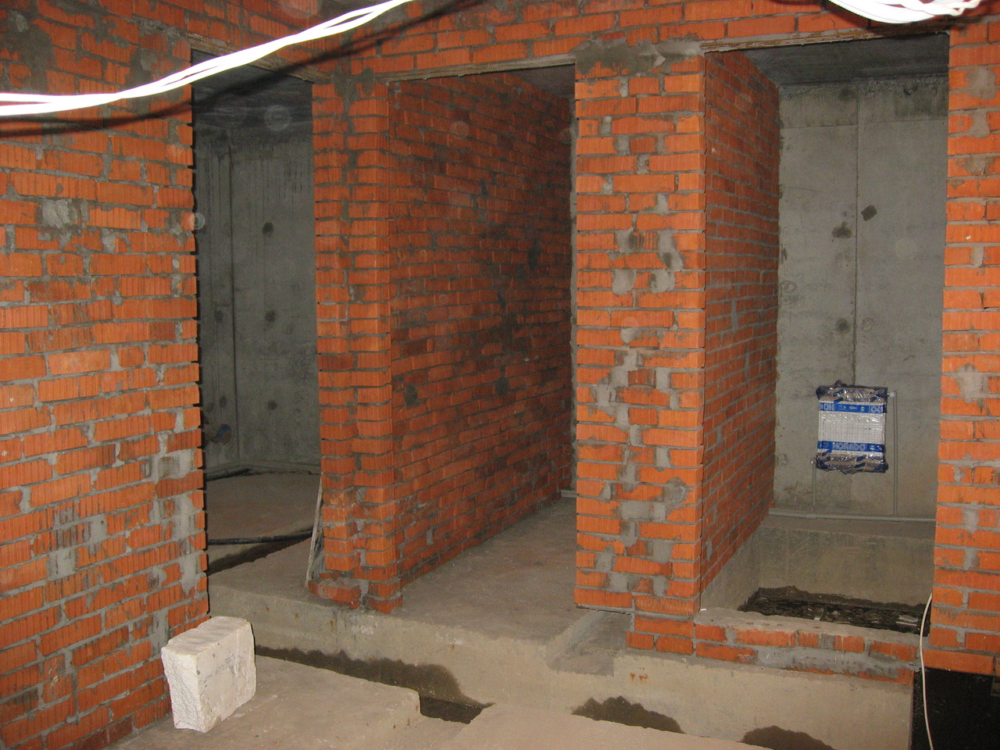
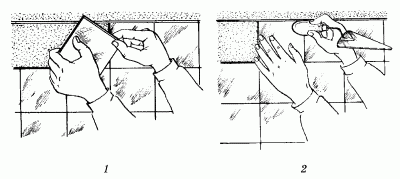

Облицовка стен «прямой ряд».

Итак, разметка и провешивание стен завершены. Теперь можно приниматься за укладку плитки.
Известная поговорка «Первый блин комом» ни в коем случае не должна относиться к облицовочным работам: от того, насколько ровно будет уложен первый ряд плитки, зависит качество укладки всех последующих рядов. Поэтому точность и аккуратность мастеру-плиточнику просто необходимы. Если вы хотите, чтобы на стене располагалось как можно меньше неполномерных плиток, работу следует начинать с одного из углов. В том случае, если укладка плиток начнется с середины стены, ряды плиток будут расположены симметрично.
Для лучшего сцепления раствора с поверхностью стены последнюю перед укладкой следует увлажнить малярной кистью, смоченной в воде. Тыльную поверхность плиток можно также увлажнить водой либо на секунду погрузить их в цементное молоко.
Когда речь шла об увлажнении плиток, ни в коем случае не имелось в виду, что плитки следует надолго замачивать в воде: в этом случае поры плиток заполнятся водой, что ухудшит сцепление раствора с плиткой.
С помощью мастерка раствор накладывают на один из углов плитки с тыльной стороны, затем прикладывают плитку к стене и ориентируют ее всей плоскостью по причальному шнуру. После этого легким постукиванием ручкой мастерка аккуратно осаживают плитку (рис. 31). Излишек раствора, появившийся между плиткой и стеной, убирают лопаткой.

Рис. 31. Укладка плитки на стене: 1 – установка плитки; 2 – осаживание плитки.
После того как будут уложены две плитки, нужно вставить между ними два стальных штырька, чтобы стыки были одинаковыми по ширине. То же самое делается после укладки каждой последующей плитки. Стальные штырьки можно вынуть после того, как будут установлены 10 плиток.
В процессе укладки плиток нужно внимательно следить за тем, чтобы раствор полностью покрывал тыльную сторону плитки. В противном случае в дальнейшем плитка будет расширяться неравномерно, если на нее попадет, например, горячая вода. Это приведет к появлению трещин на облицованной поверхности.
Укладку нужно вести по горизонтали, не забывая время от времени передвигать причальный шнур на необходимую высоту и устанавливая штырьки по горизонтальным стыкам.
Как только один ряд плиток будет уложен, необходимо проверить качество облицовки с помощью 2-метровой рейки. Для этого следует приложить ее плоской стороной к поверхности облицованной стены. Если между плоскостью рейки и облицованной поверхностью обнаружится зазор, нужно снять неровно установленную плитку, нанести дополнительное количество раствора, вновь установить снятую плитку на место и аккуратно осадить ее.
Если вы хотите придать облицованной поверхности более завершенный вид, можно сделать следующее:
1. В местах соединения потолка и стены установить карнизные фасонные детали.
2. В местах сопряжения пола и стены установить плинтусные фасонные детали.
3. В местах сопряжения двух облицованных стен установить внутренние и внешние фасонные детали.